THE MEDIA CUSTOMS
Operator manual

Operator manual
contents
It is written to be read in order once, then opened at the chapter you need. Every screen it describes is live, and every number in it was read from the running system rather than typed from memory.
chapter 01
An agentic ad-clearance crew. It watches a commercial once, judges it against every market you ship to in parallel, and re-renders the shots that fail.
A commercial is cut once and shipped everywhere. Somebody then has to answer, per market, whether it can legally air. Today that answer comes from a lawyer for the two or three biggest markets and from hope for the rest, which is how a gesture that is friendly here becomes an insult there, and how an ad gets pulled after it airs rather than before.
The Media Customs answers it for all of them at once, and shows its working. Every finding names the shot, the seconds, the rule, and the statute behind the rule, with a citation resolved live at the moment of judging. Nothing in the console is a summary of something you cannot open.
| Role | What they do here |
|---|---|
| Producer or traffic | Starts the clearance, reads the board, exports the certificate and the markers. |
| Legal or compliance | Reads the findings and their statutes, decides the ones the Guard hands over. |
| Editor | Takes the markers into Resolve or Premiere, or reviews what the remediator rendered. |
chapter 02
Looking at the film is the expensive part. Opinions about what was seen are cheap. So the two never mix.
One multimodal analyst watches each shot a single time and writes down what it sees, in neutral language, with a timecode and a box. It is forbidden an opinion. It writes a woman raises a glass of red wine, never this violates French law.
That single fact sheet then goes to every selected market at once. One adjudicator per jurisdiction reads it against its own rulebook and grounds each citation against a live source. Ninety-eight adjudicators argue about the same sentence, simultaneously, each holding a different rulebook.
The analyst may only emit observations under eighteen dimensions, and every one of the 128 rules is written against one of them. That is what makes the join between a fact and a market's opinion a lookup rather than an argument.
| alcohol, tobacco, drugs | religious symbols | modesty and dress |
| gesture and body language | food and animals | gender portrayal |
| orientation and gender id | children and minors | national symbols |
| health claims and pharma | gambling and finance | violence and weapons |
| language and idiom | humour and satire | superstition and colour |
| photosensitivity | on-screen text | comparative claims |
chapter 03
Eight stages. Each one writes something you can open afterwards.
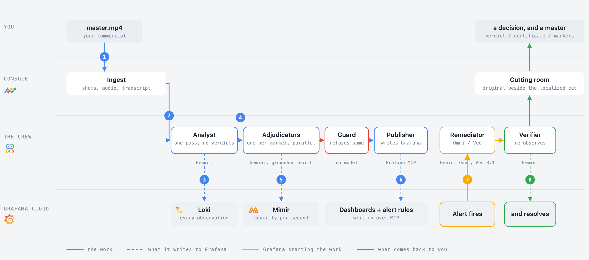
The same diagram is on the console's front page, and it plays itself. Every stage names the model doing its job underneath it.
chapter 03, continued
What each one does, and what it leaves behind for you to open.
| # | Stage | What happens | What it leaves behind |
|---|---|---|---|
| 1 | You | Hand it a master and tick the markets. | The run, in the archive. |
| 2 | Ingest | Cuts the film into shots, pulls the audio and a transcript. | Shots and keyframes. |
| 3 | Analyst | Watches each shot once. Neutral, timecoded, boxed observations. | Loki lines, kind=observation. |
| 4 | Adjudicators | One per market, in parallel, each against its own rulebook, each citation grounded. | Findings, with statutes. |
| 5 | Publisher | Pushes metrics and lines, and builds the run's dashboards and alert rules. | Mimir series, annotations, 9 boards. |
| 6 | Alert | A blocking finding trips a rule Grafana is already evaluating. | A webhook call into the service. |
| 7 | Remediator | Plans, prices and edits the failing span. One edit per shot. | A change record and a staged file. |
| 8 | Verifier | Re-runs the real analyst on the changed shots. | Fixed, or the finding back to open. |
chapter 04
What you need, what it costs, and the things it will refuse to do.
Reading is never gated. The archive, every run, every finding with its statute and citation, the rule library, frame search, the intelligence board and the Grafana inventory are open to anyone with the link. What is gated is everything that spends or destroys: starting a clearance, judging more markets, running a fix, asking the agent, and deleting a change record. Those ask for a word once and remember it in a cookie.
| Input | Accepted | Limit |
|---|---|---|
| A master | MP4 or MOV | Up to 128 seconds, up to 30 MB by upload |
| A link | Public video URL | Same duration cap, fetched at up to 720p |
| Markets | Any of 98 | More markets is more cost and more wall clock |
chapter 05
The launcher asks two things: the film, and who has to accept it.
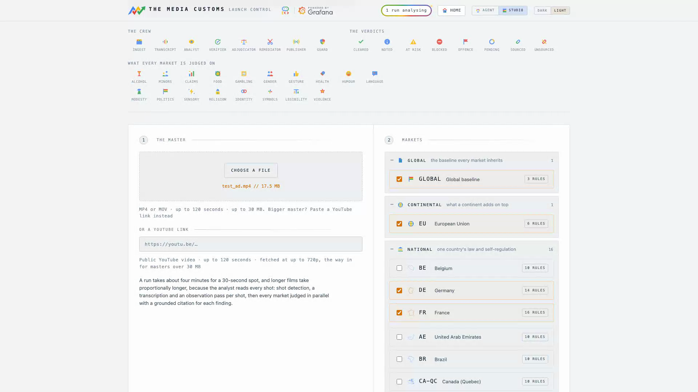
The master on the left, the market ladder on the right.
| If you want | Tick |
|---|---|
| A fast sanity check | Global and the EU: two adjudicators, the broadest rules, about a minute. |
| A real clearance | Every country you will air in. National law is where the blocking findings live. |
| A channel delivery | The broadcaster itself. It inherits its country and adds its own rules. |
A run is cheap; a fix is not. Judging costs cents and generation costs euro, so tick generously here and be deliberate later.
chapter 06
The mission feed is the crew's own event log, streamed as it happens.
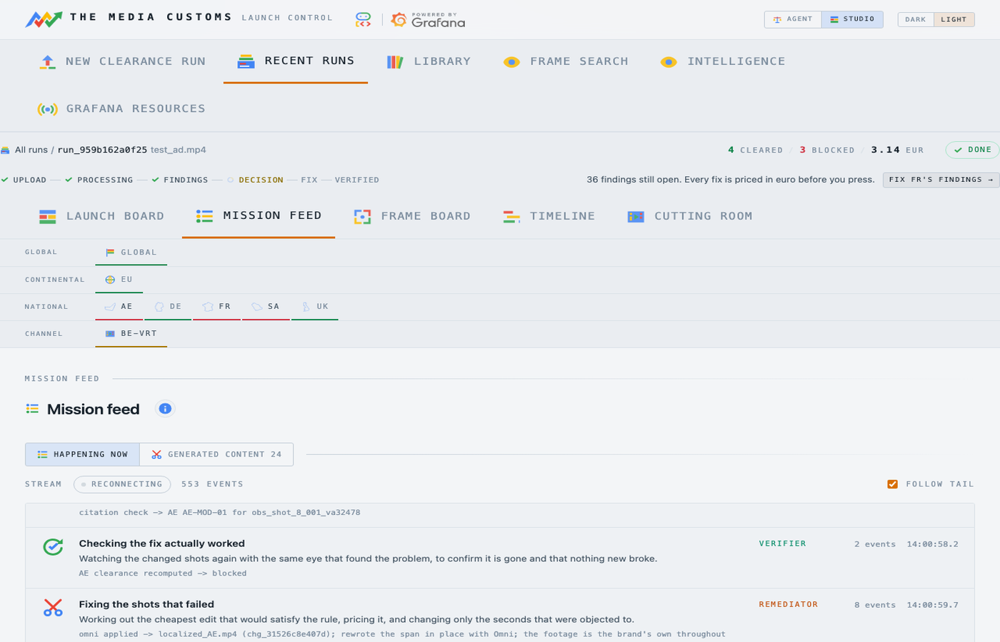
Every move, in the order it was made. Not a spinner.
Each stage says what it is doing in plain words, with its own shorthand underneath. A stage that fails says so here rather than skipping quietly, and counts itself as a metric.
| Line | What it tells you |
|---|---|
| judge → FR (6 candidates) | How many observations that market had to rule on. |
| citation check → FR FR-ALC-01 | A citation being resolved against a live source. |
| concept scope, running anyway | The planner was warned a patch cannot reach this one. Chapter 11. |
| craft gate passed: 49.7 dB outside the edit | How little of the frame outside the edit box moved. |
| verify → re-observing 1 touched shot | The verifier looking at the new footage. |
The feed is written to the run and survives it, so a finished run shows the same lines in the same order. That is what makes it evidence rather than reassurance while you wait.
chapter 07
One tile per market, and the instrument panel the crew built underneath it.
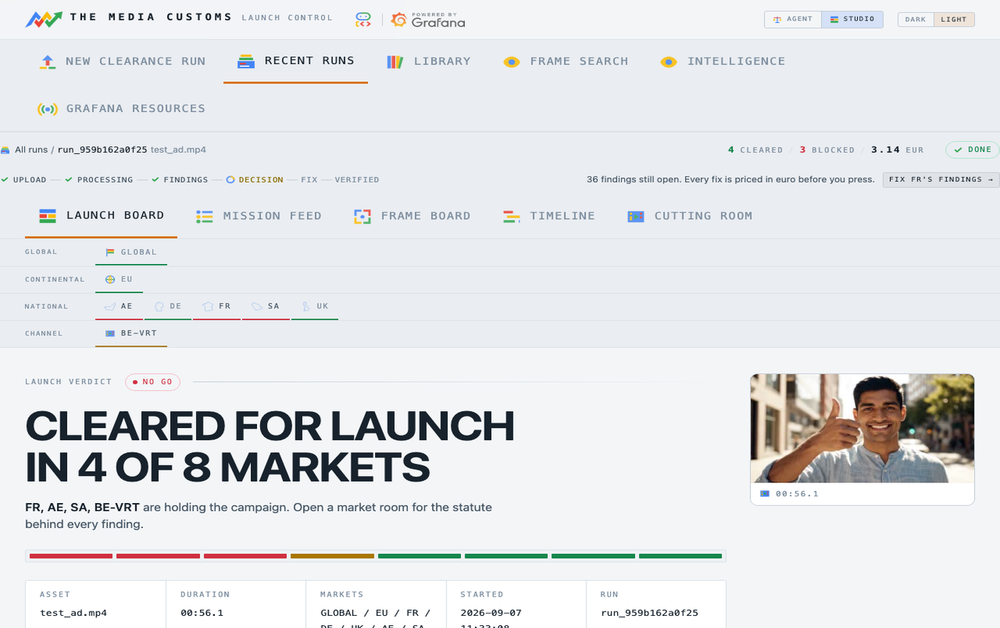
Cleared, at risk or blocked, with the worst finding on the tile.
| State | Means | Do |
|---|---|---|
| Cleared | No finding in this market blocks. | Take the master and the certificate. |
| At risk | Findings exist but none is at the blocking line, or a citation could not be resolved so its severity is capped. | Read them. This is a judgement call, not a machine one. |
| Blocked | At least one open, sourced finding is at or over the line. | Open the market room and fix or accept. |
Under the tiles is the crew's own lanes dashboard, live from Grafana and clickable. It is not a picture of the run: it is the run's data, drawn by Grafana out of the stores the crew wrote during the run.
chapter 08
Every scene the crew looked at, and the sentences it wrote before any market saw them.
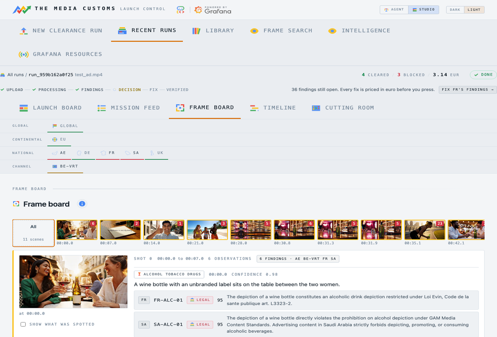
How each scene opens and closes, with its neutral observations.
This is the fact sheet all the adjudicators argued about. If a finding looks wrong, come here first and decide which leg of the join failed:
Separating those two questions is the whole reason the analyst is forbidden an opinion.
chapter 09
One grid, drawn by two systems, that turns a list of findings into a shape.
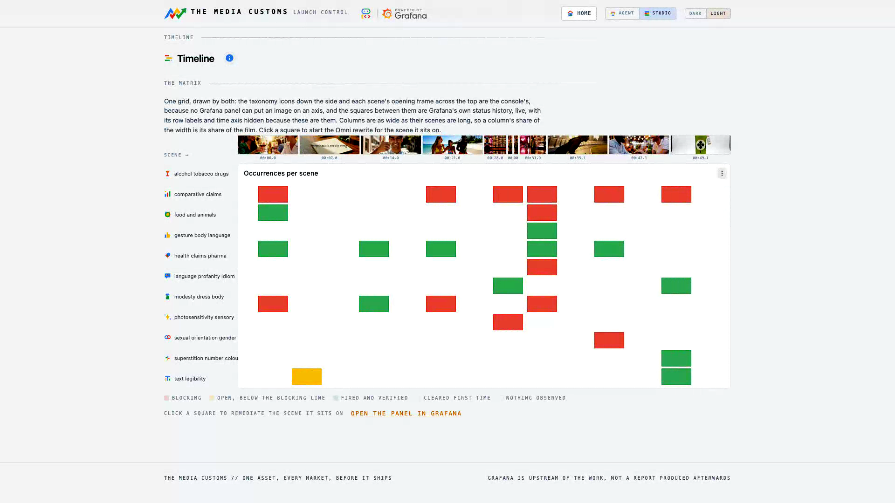
Categories down the side, scenes across the top, Grafana in between.
The taxonomy icons and the scene thumbnails on the axes are the console's, because no Grafana panel can put an image on an axis. The squares between them are Grafana's own status history panel, live. A column is as wide as its scene is long, so a column's share of the width is its share of the film.
chapter 10
The market room is where a finding stops being a colour and becomes an argument.
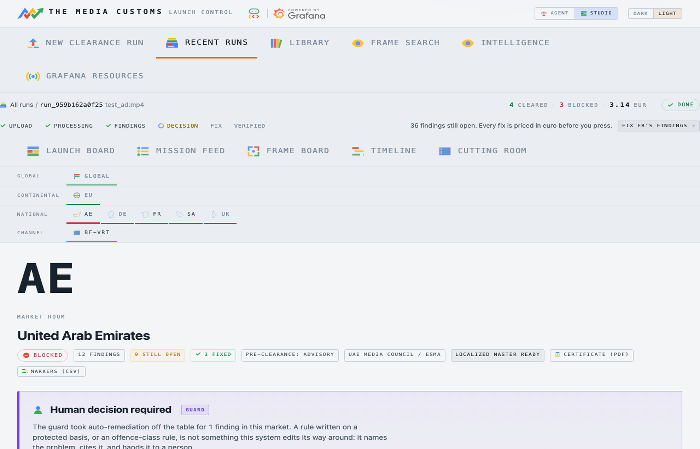
One panel per scene, every finding written against it.
| Field | Means |
|---|---|
| Rule id | The rule in the market pack, for example FR-ALC-01. |
| Class | legal, policy or offence. Legal blocks; offence is never auto-edited. |
| Severity | 0 to 100. Seventy is where a finding starts to block a market. |
| Window | The seconds it covers, which is what a fix will touch. |
| Evidence | The triggering frame, with the analyst's own sentence. |
| Statute | The regulator's own words, and the citation resolved at judging time. |
| Sourced | Whether that citation resolved. Unsourced findings cannot trigger a fix. |
Two takeaways sit at the top of the room: the clearance certificate as a PDF, and the marker files, both per market and both described in chapter 21. When three jurisdictions object to the same two seconds, that is one shot with three objections rather than three problems, and one edit answers all of them.
chapter 11
The fix panel asks two questions: what should change, and how it should be done.
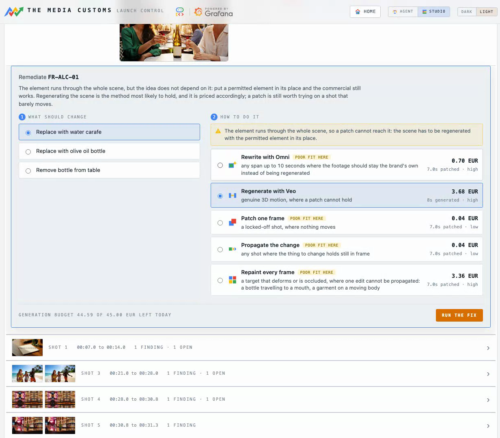
What should change on the left, how to do it on the right, priced.
The left column offers replacements the market allows. The right column offers the five methods, each with its price in euro and a note where it is a poor fit for this particular shot. Nothing is spent until you press.
chapter 11, continued
Each one disturbs a different amount of footage, and costs accordingly.
| Method | What it does | Right when | Price |
|---|---|---|---|
| Patch one frame overlay |
One image edit of one keyframe, held over the span. | A locked-off shot where nothing moves. | 0.04 EUR |
| Propagate the change track |
The same edit, its lighting divided out and multiplied into every live frame. | The thing to change holds still in frame while the shot moves. | 0.04 EUR |
| Repaint every frame per_frame |
A repaint of each frame in the span. | A target that deforms or is occluded, where one edit cannot be propagated. | 0.04 EUR per frame |
| Rewrite with Omni omni |
Gemini Omni edits the moving footage directly, video to video. | The element runs through the scene, and the footage is yours. | 0.10 EUR per second |
| Regenerate with Veo bridge |
Both ends of the span are edited, and Veo 3.1 generates the motion between them. | Genuine 3D motion, where a patch cannot hold. | 1.88 to 3.68 EUR |
When an alert triggers a fix rather than a person, the planner picks by the observation's own dimension, and it is a pure function with no model call: relettering for on-screen text, prop_swap for an object, revoice for a spoken line. It escalates to Omni when the scope classifier says the element runs through the whole scene, or when the shot moves too much for a patch to hold.
chapter 12
Three things stand between a generated edit and your master.
Before anything is accepted, the staged file is measured: length, resolution, soundtrack, and how much of the frame outside the edit box moved. A file that lost frames, lost resolution, lost its audio or disturbed the rest of the picture is discarded, the master is left untouched, and the finding goes back to open.
The gate cannot tell you whether the edit is any good, only whether it broke something. So the verifier re-runs the real analyst pass over the changed shots and asks the same instrument that found the problem whether it still sees it. It then answers the second half: did anything new break? An edit that removes a bottle can also remove the finding next to it, or introduce one.
When the finding is verified gone, its blocking metric drops to zero and the alert rule that fired resolves itself. Nothing tells Grafana the fix worked. The number it was watching simply stops being true.
chapter 13
The verifier can only ask its own question. A fix can pass it and still be wrong to a person.
An Omni rewrite once took a tobacco plug out of a hand and left the character holding something rifle-shaped. It cleared its rule, because the rule was about tobacco. To a human it was obviously not shippable.
So every change on the my edits screen carries a re-edit this control. You say what is wrong with it in your own words, and your words become the instruction for the redo.
| Instead of | Write |
|---|---|
| "this is bad" | "he should not have a gun in his hands afterwards" |
| "wrong colour" | "the replacement bottle should be clear glass, not green" |
| "still visible" | "the ashtray on the table is still there in the second half" |
Name the object and where it is. The instruction is handed to the model as you wrote it.
chapter 14
When a rule is written on a protected characteristic, the honest answer is not an edit.
Two rules in the corpus carry a protected basis. A finding matching either is marked remediation blocked with the verbatim reason rule basis targets a protected characteristic; human decision required, and the console shows the statute beside it.
That is all. It never reads the rationale, the severity or any other model-authored field, and it never calls a model. It is a pure function, which is what makes it un-promptable: a crafted finding cannot argue its way past it. The refusal is enforced a second time at the point of action, before a single frame is touched.
| Choice | What it means |
|---|---|
| Approve a manual edit | An editor fixes it in the suite. Take the markers. |
| Send to legal review | The statute goes with it. Recorded on the run. |
| Accept the risk | Air it as it is, knowingly. Also recorded, and printed on the certificate. |
chapter 15
The original and the localized master, playing in lockstep on the second that changed.
One pair per market. Both players open on the changed second.
One edited master per market, written by the remediator and confirmed by the verifier. The pairs are stacked by market and each opens on the second that changed rather than at zero, so you are looking at the edit within a second of arriving.
A second screen shows everything a model produced for the run: the stills a patch wrote, the seconds Omni or Veo rendered, and for a bridge the two anchor frames it was handed. Those two frames are the whole brief, so they are the only way to tell whether Veo invented something.
What to check: is the violating thing gone, did anything else change, does the edit hold for the whole span, and does the cut still work?
chapter 16
My edits is the cross-run cutting room: what has this thing actually changed?
Every edit the instance has made, newest first, with the frame before and the frame after side by side and the rule that asked for it named. One card per scene, not per market, and the card names the market whose objection paid for the render. Picture edits and sound edits are two sides of a toggle, because one you watch and the other you listen to.
This is the one control in the console that destroys evidence, so it asks for a word and says exactly what it takes: the change record, both frames and any generated clip. There is no undo, and they are the only copy.
chapter 17
A second agent, with ten tools and the whole console as its canvas.
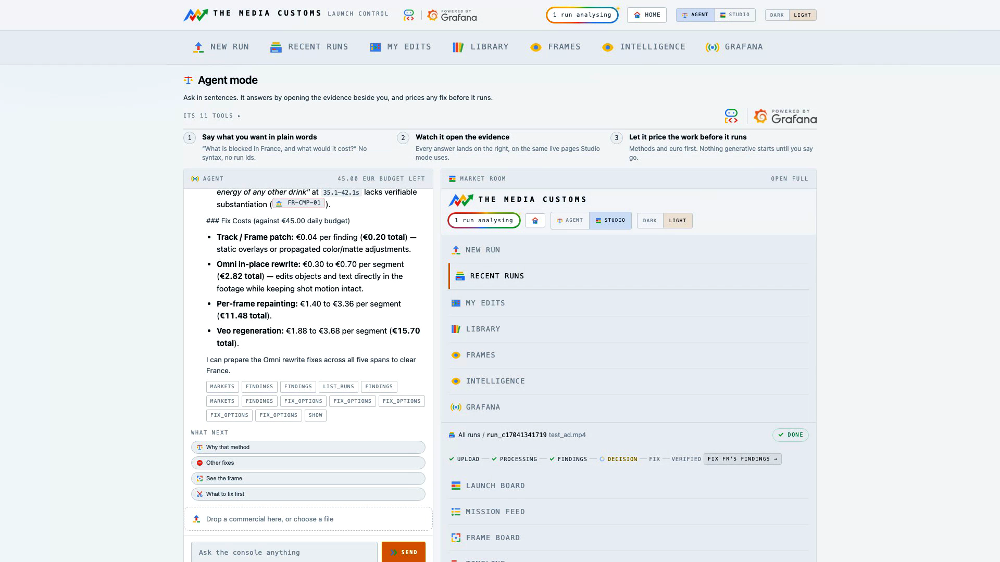
It answers on the left and opens the evidence on the right.
Agent mode answers by opening the view that proves the answer, and it prices any fix before it runs. It reads every run in the instance, not just the one you are looking at.
| Ask | You get |
|---|---|
| Why is France blocked, and what would a fix cost? | The rules, the seconds, the statutes, and a price per method. |
| Show me the frames FR-ALC-01 fired on | The frames themselves, opened beside the answer. |
| What should I fix first? | The shot that closes the most markets for the least money. |
| Which markets need a human? | The Guard's refusals, with their statutes. |
| Build me a dashboard for this run | A real Grafana dashboard, from the run's own labels. |
chapter 18
Two reference screens: what the rules say, and where a thing appears.
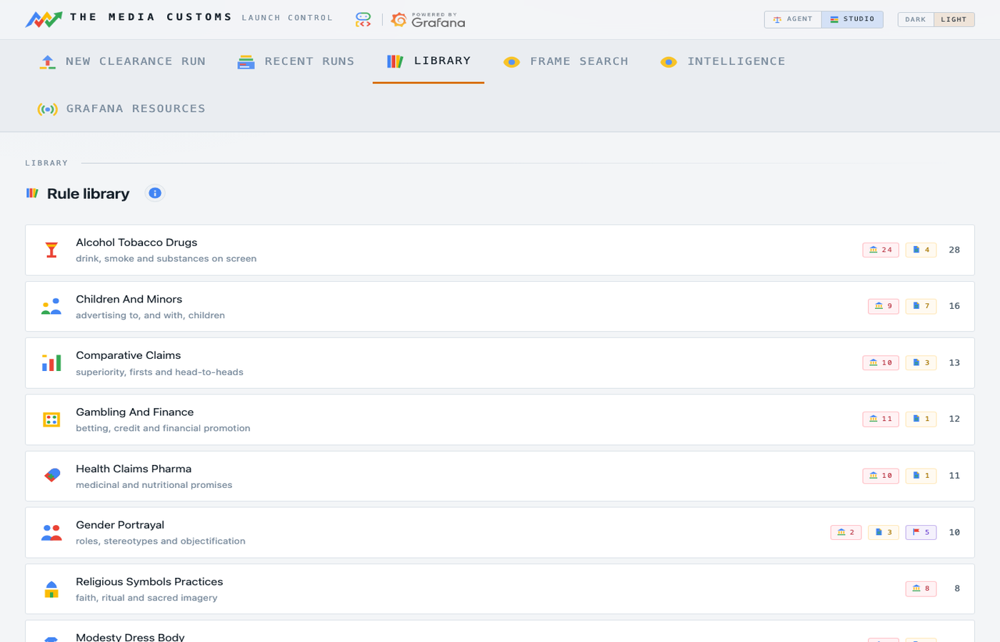
Every rule, filed under the observation that can trigger it.
128 rules across 21 packs, each showing the market that holds it, the statute text, whether it blocks or advises, and which of the eighteen dimensions can trigger it. This is the place to answer "what would this market object to" before you have run anything.
Every caption the analyst ever wrote is a Loki line, so "which frames show wine" is a question rather than a feature somebody anticipated. The match is semantic: the question and the candidate captions go to Gemini together, so bunnies finds an animated rabbit character without anybody guessing which word a vision model chose months ago. Each result says, in the model's own words, why it is there.
chapter 19
Every other screen answers a question about one commercial. This one reads across all of them.
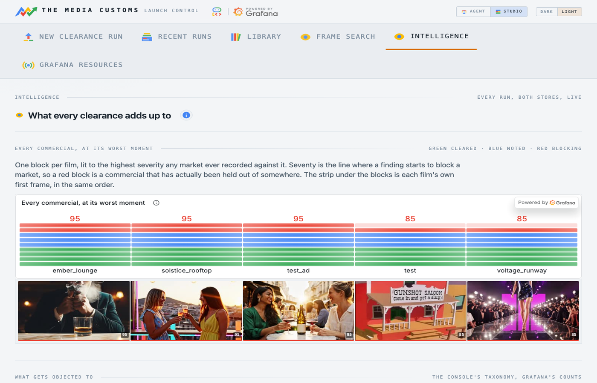
Seventeen panels and eight kinds of chart, from the same two stores.
Which subject your creative keeps tripping over, which jurisdictions are actually hard, the dimension against market matrix, the severity distribution, worst severity per market against the line where a finding starts to block, market status over time, and the raw finding stream underneath it all.
Grafana charts the data because it holds it. The console draws the axis because Grafana has never heard of an eighteen-part taxonomy or a broadcaster channel's mark. The hero is one block per commercial, lit to the highest severity any market ever recorded against it, with that film's own first frame underneath it in the same order.
chapter 20
Not a report produced afterwards. The instrument panel is built during the run, by an agent, and it is what triggers the work.
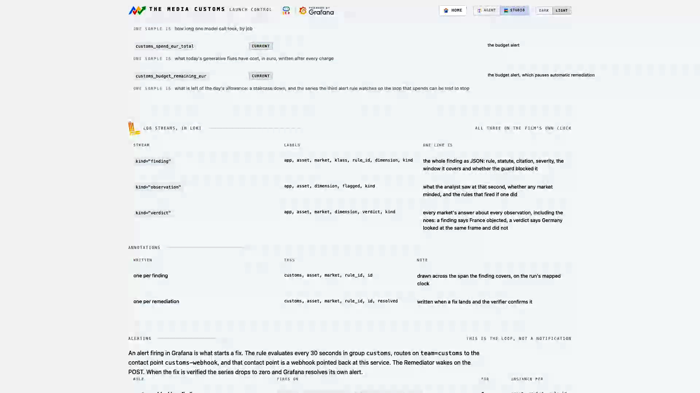
The whole surface on one page, read from the definitions the agent provisions from.
| What | How much |
|---|---|
| Dashboards, built at runtime | 9 boards, 40 panels |
| Metric series to Mimir over OTLP | 9 series |
| Log streams to Loki | 3 kinds |
| Alert rules | 3 |
| Write operations, MCP where a tool exists | 8 |
The crew provisions its own folder, dashboards and alert rules through the official mcp-grafana server. Where that release has no write tool for an operation, it goes over the provisioning API instead and the inventory says so.
chapter 20, continued
Two ask Grafana to wake the crew. The third asks it to stop.
| Rule | Fires when | What happens |
|---|---|---|
| customs-blocking | customs_blocking crosses 70 for an asset, market and rule | The webhook wakes the remediator on that finding. |
| customs-market-down | A market's status goes to at risk or blocked | Recorded, and visible on the overview. |
| customs-budget-low | customs_budget_remaining_eur falls to the floor | Automatic remediation pauses for the rest of the UTC day. |
The rules evaluate every thirty seconds. The contact point is a route on this service, and the webhook reads labels only: it never trusts an annotation or a message body to tell it which finding to spend money on.
| Series | Clock | One sample is |
|---|---|---|
| customs_risk | mapped | the worst severity in force at video second n |
| customs_market_status | current | 0 cleared, 1 at risk, 2 blocked |
| customs_blocking | current | the severity of one open, sourced, blocking finding |
| customs_stage_error | current | how many times one stage failed on this asset |
| customs_collateral_drift | current | PSNR in dB inside the span of one edit |
| customs_spend_eur_total | current | what has been charged today |
chapter 21
Four artefacts. Two are for machines, two are for people.
A PDF per market, and deliberately not a summary. Every finding the market raised is on it, worst first, with the rule id, the class, the severity, the seconds it covers, the statute in the regulator's own words, and the citation the adjudicator retrieved at judging time. A fixed finding carries the method, the change id and the verifier's own sentence. A finding the Guard refused says human decision required with the statute behind it, and the decision a person made. An unsourced rule says that its severity was capped, and why.
It is the document an archive needs three years later when somebody asks why this cut aired in Riyadh.
One edited file per market, with only the failing seconds touched, checked by the craft gate and signed off by the verifier. Downloadable from the cutting room.
Two formats, because the two suites disagree about which they trust: a CSV with the columns both of them look for, and CMX3600, the oldest interchange there is and the one Resolve imports most reliably. Both carry the frame rate they were written at, read as the rational the probe reports rather than as a float, because 23.976 written as 24 drifts a frame a second and looks perfectly plausible while it does it.
| Colour | Means |
|---|---|
| Red | A legal finding at or over the blocking line. |
| Green | The verifier already signed a fix off here. |
| Yellow | Everything else still open. |
A finding the Guard refused carries HUMAN DECISION REQUIRED in its own note, so the editor reads why while they work.
chapter 22
The loop that can spend is the loop that needs a brake.
Judging is cheap and generating is not. Every method shows its euro cost in the picker before you press, and the agent quotes a fix before it starts one. Every charge is written to Mimir on the real clock as it happens, so spend is a series you can chart rather than a number somebody reconciles later.
| Control | Effect |
|---|---|
| Generation budget | A euro ceiling for the whole system, per UTC day. |
| Visitor cap | A much smaller ceiling for anyone through the visitor door. |
| Budget alert | Fires above the price of the most expensive single fix, and pauses automatic remediation. |
chapter 23
A market is a YAML file, not code. The pack format is the extension point.
A pack names its market, its parent on the ladder, and its rules. Each rule names the dimension that can trigger it, the class, the severity it carries, the statute in the regulator's own words, and a citation reference that has to resolve.
market: FR
name: France
parent: EU
rules:
- id: FR-ALC-01
dimension: alcohol_tobacco_drugs
class: legal
severity: 95
trigger: alcohol is visible or being consumed on screen
statute: >
Loi Evin, Code de la sante publique art. L3323-2: television
advertising for alcoholic beverages is prohibited.
citation_ref: legifrance.gouv.fr LEGIARTI000006688087
chapter 24
Install, configure, provision, deploy.
# 1. Environment python3.12 -m venv .venv && .venv/bin/pip install -r requirements.txt cp .env.example .env # then fill in the Google Cloud and Grafana values # 2. Provision the Grafana surface: dashboards, all three alert rules, # the webhook contact point, the share links. Idempotent. .venv/bin/python scripts/provision_grafana.py # 3. Clear an ad from the terminal .venv/bin/python scripts/run_pipeline.py docs/samples/test_ad.mp4 --markets FR,EU,AE # 4. Or run the console and use a browser .venv/bin/uvicorn customs.app:app --reload # http://127.0.0.1:8000
| Variable | What it sets |
|---|---|
| GOOGLE_CLOUD_PROJECT | The Vertex project every model call bills to. |
| GRAFANA_URL, GRAFANA_SA_TOKEN | The stack the crew provisions into. |
| LOKI_PUSH_URL, OTLP_URL | Where lines and metrics go. |
| WEBHOOK_TOKEN | The key on the alert contact point. Without it the webhook refuses. |
| JUDGE_PASSWORD, VISITOR_PASSWORD | The two doors. |
| EDITS_PASSWORD | The word that removes a change record. |
| VEO_MODEL, OMNI_MODEL | Pinned model ids, re-probed on a cold start. |
chapter 24, continued
Two scripts: the service, and the viewer that lets its panels be framed.
scripts/deploy.sh # the service, secrets, IAM and the Grafana wiring scripts/deploy_viewer.sh # the embeddable Grafana viewer beside it
The deploy script is idempotent and safe to re-run. It enables the APIs, mints the secrets, sets the runtime service account, builds the container, deploys the revision, and re-wires the Grafana contact point to the new URL.
chapter 25
The failures this system actually has, and what each one means.
| What you see | What it is | What to do |
|---|---|---|
| A dashboard says No data | The time range is wall clock, but the run's risk series is on the film's clock. | Pin the range to the run, or open the panel from the console. |
| Omni refused the input | The footage contains recognisable third-party content. | Nothing was charged, and a retry cannot help. Use a patch method, or your own footage. |
| Omni refused the output | The instruction asked for something it will not render, often about a photorealistic person. | Rewrite the instruction. The footage was fine; the ask was not. |
| Veo refused the frames | Its filter read the shot as depicting a public figure. | Never charged. The footage is the refusal. |
| A fix passed and the finding reopened | The verifier saw the violation survive, or something new break. | Read the new finding's words. Often the method could not reach it. Chapter 11. |
| A fix looks wrong but cleared | The rule was satisfied and a person still would not ship it. | Use re-edit and say what is wrong. Chapter 13. |
| Everything is slow, then a stage errors | One instance, one writer thread. Two concurrent multi-market clearances are too much. | Run them one at a time. |
| The deploy refuses | The live service reports work in flight. | Wait. Forcing it discards a real clearance or a fix mid-render. |
| A fix seems stuck for a long time | Image generation quota is a small number of requests a minute, project wide. | Per-frame methods are slow by arithmetic. Prefer Omni for long spans. |
chapter 26
Routes, stores and streams, for looking something up quickly.
| Route | Screen | Gated |
|---|---|---|
| / | Front door | no |
| /runs | Archive | no |
| /new | New clearance | spends |
| /runs/{id} | Launch board | no |
| /runs/{id}/mission | Mission feed | no |
| /runs/{id}/frames | Frame board | no |
| /runs/{id}/timeline | Timeline | no |
| /runs/{id}/markets/{m} | Market room | no |
| /runs/{id}/cutting | Cutting room | no |
| /runs/{id}/generated | Generated content | no |
| /edits | My edits | removal spends |
| /agent | Agent mode | spends |
| /library | Rule library | no |
| /search | Frame search | no |
| /insight | Intelligence | no |
| /grafana | Grafana resources | no |
| /webhook/alert | The alert contact point | keyed |
chapter 26, continued
What the crew writes, and how to read it back.
| kind | One line is | Labels |
|---|---|---|
| observation | one keyframe the analyst described | app, asset, dimension, flagged |
| finding | the join, with the statute in it | app, asset, market, rule_id |
| verdict | one market's answer | app, asset, market |
| Clock | Series | Read by |
|---|---|---|
| Mapped, the film's own | customs_risk | The timeline, the lane strip, the grid. |
| Current, the wall clock | customs_market_status, customs_blocking, customs_stage_error, customs_spend_eur_total | The overview, and all three alert rules. |
Alerting reads only the current-clock series, because an evaluation window has to mean what it says. The timecode axis reads only the mapped one.
One asset, every market, before it ships.